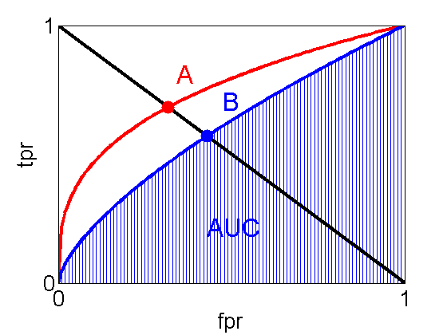

ROC curves for two hypothetical classification systems
A is better than B. Plots true positive rate, (tpr) vs false positive rate, (fpr).
domain = 0:0.01:1;
fA = @(x)x.^(1/3);
fB = @(x)x.^(2/3);
linewidth = {'LineWidth', 3};
hold all;
plot(domain, fA(domain), '-r', linewidth{:});
plot(domain, fB(domain), '-b', linewidth{:});
shade(fB, 0, 0, 1, 'b', 0.01);
plot([0;1], [1;0], '-k', linewidth{:});
intersectA = 0.3177; % found using double(solve('(x^(1/3))+x-1','x'))
intersectB = 0.4302; % found using double(solve('(x^(2/3))+x-1','x'))
plot(intersectA, fA(intersectA), '.r', 'MarkerSize', 40);
plot(intersectB, fB(intersectB), '.b', 'MarkerSize', 40);
axis([0, 1, 0, 1]);
set(gca, 'XTick', [0, 1], 'YTick', [0, 1], 'FontSize', 20);
xlabel('fpr');
ylabel('tpr');
box on;
%A
annotation(gcf, 'textbox', [0.3822 0.74 0.06254 0.08795], ...
'String' , {'A'} , ...
'FontSize' , 24 , ...
'FitBoxToText' , 'off' , ...
'LineStyle' , 'none' , ...
'Color' , [1 0 0] );
% B
annotation(gcf, 'textbox', [0.4837 0.66 0.06254 0.08795], ...
'String' , {'B'} , ...
'FontSize' , 24 , ...
'FitBoxToText' , 'off' , ...
'LineStyle' , 'none' , ...
'Color' , [0 0 1] );
% AUC
annotation(gcf, 'textbox', [0.45 0.25 0.104 0.1205], ...
'String' , {'AUC'} , ...
'FontSize' , 24 , ...
'FitBoxToText' , 'off' , ...
'LineStyle' , 'none' , ...
'Color' , [0 0 1] );
printPmtkFigure ROChand;
